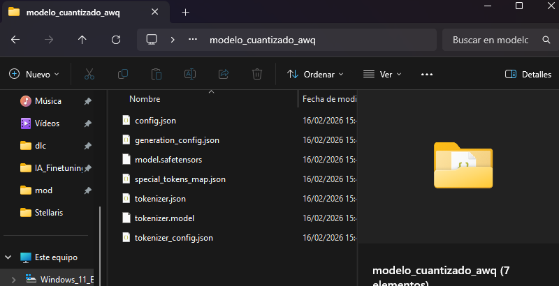
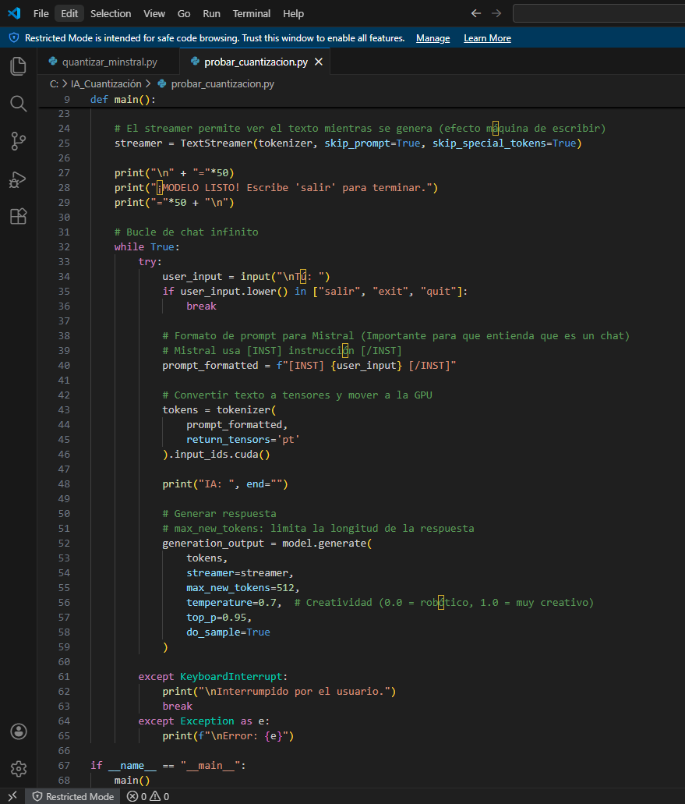
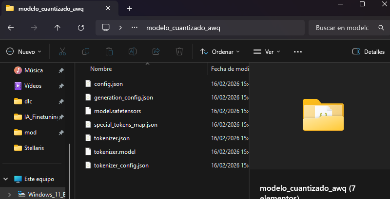
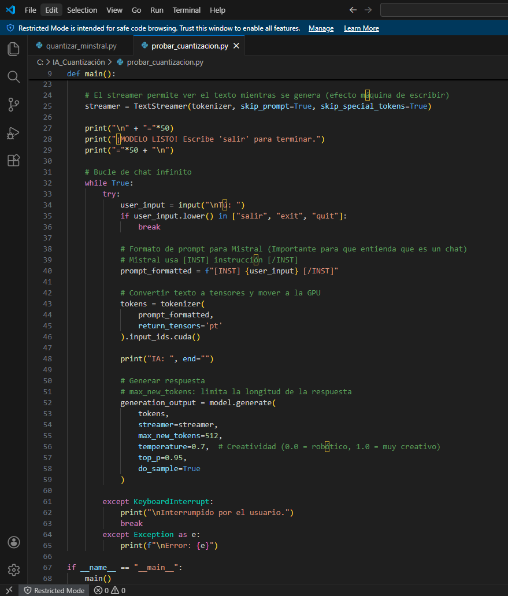

Cuantización
Capturas por: Ismael Herrero de la Torre
Desarrollo del documento : Izan Morcillo Martín
Índice
1. ¿Qué es la cuantización en IA?
3. Tipos de cuantización (visión general)
4. Proceso de creación y cuantización del modelo
Organización inicial del proyecto
Desarrollo del script principal
Implementación de la cuantización
Verificación del modelo cuantizado
6. Comparación con otras técnicas de compresión
La cuantización en Inteligencia Artificial es una técnica de optimización que consiste en reducir la precisión numérica de los parámetros (pesos) y activaciones de un modelo para disminuir su tamaño y mejorar su eficiencia computacional.
Normalmente, los modelos de redes neuronales trabajan con números en punto flotante de 32 bits (float32). La cuantización transforma estos valores en representaciones de menor precisión, como int8 (8 bits) o float16.
Es el proceso de mapear un conjunto continuo de valores (alta precisión) a un conjunto discreto más pequeño (menor precisión), manteniendo el rendimiento del modelo lo más estable posible.
Reducción del tamaño del modelo.
Menor uso de memoria.
Mayor velocidad de inferencia.
Menor consumo energético.
Ejemplo sencillo
Si un modelo ocupa 100 MB en float32, tras cuantización a int8 puede reducirse aproximadamente a 25 MB.
Hacer que modelos grandes puedan ejecutarse en dispositivos con recursos limitados sin perder demasiada precisión.
Los modelos actuales de IA son cada vez más grandes y complejos. Organizaciones como OpenAI o Google DeepMind desarrollan modelos con miles de millones de parámetros.
Problemas actuales:
Alto consumo de memoria.
Gran demanda de energía.
Costes elevados en infraestructura.
Dificultad para ejecutar modelos en móviles o dispositivos edge.
En dispositivos como smartphones, IoT o sistemas embebidos, no se dispone de GPUs potentes. La cuantización permite que estos modelos funcionen en hardware limitado sin necesidad de servidores externos.
Además, reduce el impacto ambiental al disminuir el consumo energético en centros de datos.
Existen distintos tipos de cuantización:
Post-Training Quantization (PTQ): se aplica después del entrenamiento. Es más rápida y sencilla, pero puede reducir algo la precisión.
Quantization Aware Training (QAT): el modelo se entrena teniendo en cuenta la cuantización desde el inicio, logrando mejores resultados.
Cuantización dinámica: convierte valores durante la ejecución.
Cuantización estática: requiere calibración previa con datos representativos.
Cada tipo implica un equilibrio diferente entre precisión y eficiencia.
En primer lugar, organicé la estructura de carpetas del proyecto. Creé un directorio específico para la cuantización y trabajé dentro de un entorno virtual (venv) para aislar las dependencias.
Dentro del proyecto incluí los archivos principales:
main.py
modelo_cuantizado_onnx.py
Carpeta del entorno virtual
Con esto me aseguré de mantener el proyecto ordenado y evitar conflictos con otras librerías instaladas en el sistema.
A continuación, desarrollé el archivo main.py, donde implementé la lógica principal del modelo.
En este script:
Importé las librerías necesarias como torch, transformers y otras dependencias.
Cargué un modelo preentrenado utilizando AutoTokenizer y AutoModelForSequenceClassification.
Definí el texto de prueba para realizar la inferencia.
Tokenicé el texto de entrada utilizando el tokenizer correspondiente.
Ejecuté la inferencia con el modelo en modo evaluación (model.eval()).
Procesé la salida (logits) y obtuve la predicción final.
Mostré por pantalla la clase predicha.
En esta fase validé que el modelo funcionara correctamente antes de aplicar la cuantización.
Después, en el archivo modelo_cuantizado_onnx.py, implementé el proceso de exportación y cuantización del modelo.
En este script:
Cargué nuevamente el modelo preentrenado.
Preparé una entrada de ejemplo (dummy input) necesaria para exportar el modelo.
Exporté el modelo a formato ONNX utilizando torch.onnx.export.
Especifiqué:
El nombre del archivo de salida .onnx
Los nombres de entrada y salida
El uso de ejes dinámicos para permitir diferentes tamaños de batch
Apliqué la cuantización dinámica utilizando las herramientas de ONNX Runtime.
Guardé el modelo cuantizado en un nuevo archivo.
Este proceso permitió reducir el tamaño del modelo y optimizar su rendimiento en inferencia.
Para que todo el entorno funcionara correctamente, instalé las siguientes librerías:
onnx
onnxruntime
onnxruntime-tools
torch
transformers
huggingface_hub
accelerate
La instalación la realicé mediante pip install, asegurándome de que todas las dependencias necesarias para exportación y cuantización estuvieran disponibles.
Finalmente, ejecuté el modelo cuantizado y comprobé:
Que el archivo ONNX se había generado correctamente.
Que el modelo reducido funcionaba sin errores.
Que la inferencia producía resultados coherentes.
También verifiqué por consola los logs de ejecución para asegurarme de que no hubiera fallos en la exportación ni en la cuantización.
Conclusión del proceso
En resumen, primero validé el modelo original, después lo exporté a ONNX y finalmente apliqué cuantización dinámica para optimizarlo. Durante todo el proceso me aseguré de mantener un entorno controlado, verificar cada paso y comprobar el funcionamiento final del modelo cuantizado.
Reducción significativa del tamaño del modelo
Puede reducirse hasta 4 veces o más.
Mayor velocidad de inferencia
Las operaciones con enteros son más rápidas que con float32.
Menor consumo energético
Fundamental para dispositivos móviles y centros de datos.
Facilita el despliegue en hardware limitado
Permite ejecutar modelos en microcontroladores o dispositivos edge.
Pérdida de precisión
Puede disminuir ligeramente el rendimiento del modelo.
Complejidad técnica
Implementar cuantización avanzada requiere conocimientos matemáticos y técnicos.
No todos los modelos responden igual
Algunos modelos son más sensibles a la reducción de precisión.
La cuantización no es la única técnica para reducir modelos:
Pruning: elimina conexiones o pesos poco importantes.
Distillation (Knowledge Distillation): un modelo pequeño aprende de uno grande.
Diferencia principal:
La cuantización reduce la precisión numérica.
El pruning reduce la estructura.
La distillation reduce la complejidad aprendiendo de un modelo maestro.
En muchos casos se combinan varias técnicas para obtener mejores resultados.
La cuantización es una técnica fundamental en la optimización de modelos de Inteligencia Artificial. Permite reducir el tamaño, acelerar la inferencia y disminuir el consumo energético, facilitando el despliegue en dispositivos con recursos limitados.
Aunque puede implicar una ligera pérdida de precisión, sus beneficios en eficiencia la convierten en una herramienta clave en el desarrollo moderno de IA.
En un contexto donde los modelos son cada vez más grandes y costosos, la cuantización representa una solución estratégica para hacer la Inteligencia Artificial más accesible, sostenible y escalable.